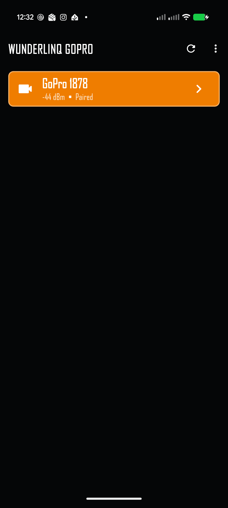
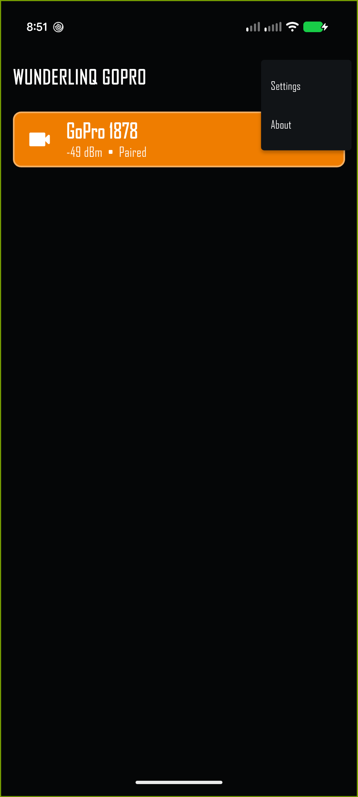
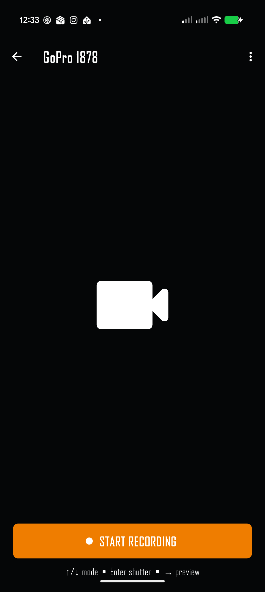
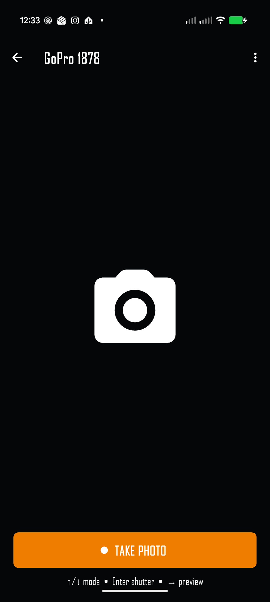
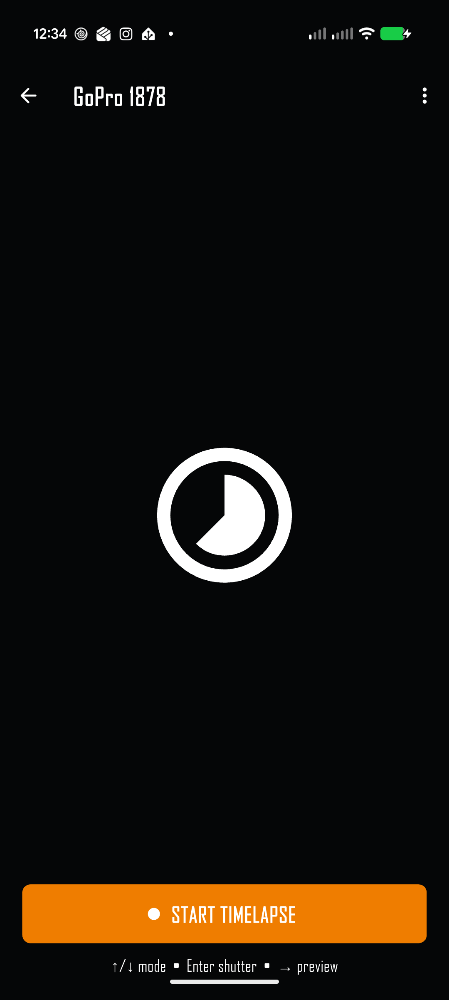
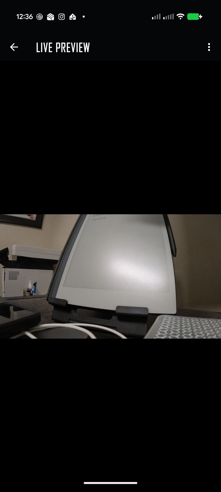
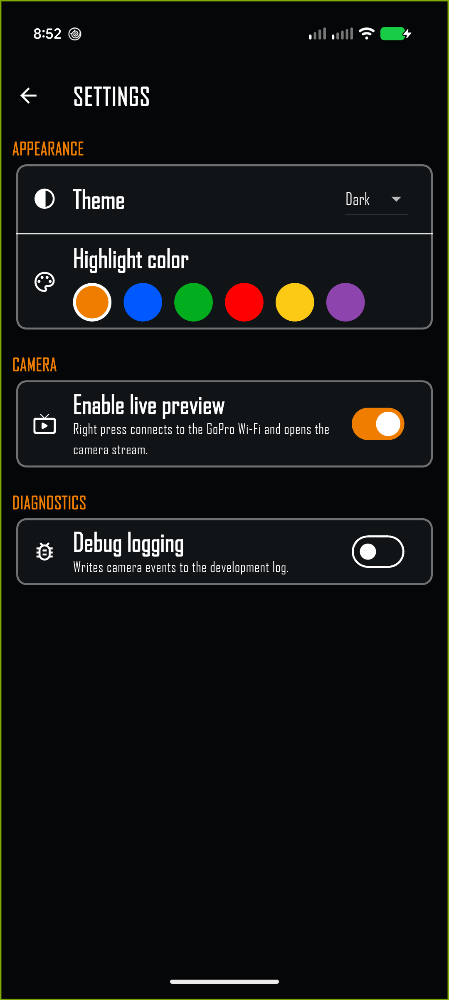
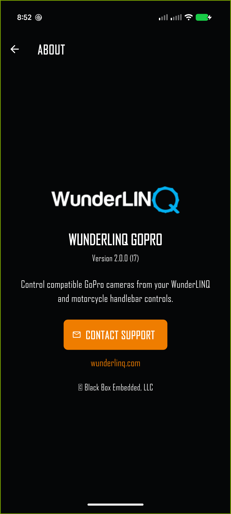

Quick start
WunderLINQ GoPro controls the camera over Bluetooth. Live preview additionally uses the GoPro's Wi‑Fi network. Set up the connection while parked and leave the camera powered on or awake.
- Enable Bluetooth on the phone and grant the app's Bluetooth permission.
- On the GoPro, open Connections → Connect Device and make it available for pairing.
- Open WunderLINQ GoPro. Select your camera from the discovery screen and accept the phone's pairing request if shown.
- Wait for the camera control screen. Use Up or Down to select a mode, then Enter or the large button to use the shutter.
- For preview, enable it in Settings, then press Right or swipe left across the camera screen.
Find and pair a camera


First connection
The app scans for nearby GoPro cameras. A camera already bonded to the phone is marked Paired. An unpaired camera must be in its pairing mode before you select it; the phone may then show a system Bluetooth pairing prompt. Accept that prompt and wait for the camera controls to open.
If the camera is missing, wake it, return to its Connect Device screen, and tap the rescan icon in the app. A signal-strength value in dBm helps distinguish multiple nearby cameras; values closer to zero generally indicate a stronger signal.
Reconnect or disconnect
Select the camera again from the discovery screen to reconnect. On the camera control screen, tap the back arrow or press Left to return to discovery. The app releases its camera connection when you leave that screen.
Handlebar and touch controls
WunderLINQ GoPro is designed for the directional and Enter inputs supplied by the main WunderLINQ setup. The same core actions are available through the phone screen.
| Input | On the camera screen | Touch equivalent |
|---|---|---|
| Up / Down | Cycle through the modes advertised by the connected camera. | Swipe vertically. |
| Enter | Take a photo, start or stop video recording, or start or stop time lapse. | Tap the large shutter button. |
| Right | Connect to the GoPro Wi‑Fi and open live preview when enabled. | Swipe left. |
| Left | Return to camera discovery. In preview, return to camera controls. | Tap Back or swipe right. |
| Escape | Open the main WunderLINQ app from the camera screen. In preview, return to camera controls. | Use the app switcher or Back as appropriate. |
On the discovery screen, Up and Down select a camera, Enter connects, and Escape opens the main WunderLINQ app.
Camera modes and shutter
The app reads the connected camera's preset catalog and offers its available Video, Photo, and Time Lapse modes. The icon and large shutter label show the current mode. Wait a moment after switching for the camera to report its new status. Live preview cannot be opened while the camera is recording; stop capture first.



Live preview


- Open the overflow menu and turn on Enable live preview in Settings.
- Return to the camera controls. Stop any active recording or time lapse before opening preview.
- Press Right or swipe left. The app asks the GoPro to enable Wi‑Fi, joins its network, and starts the video stream.
- Use Back, Left, Escape, or a right swipe to leave preview.
Android may show a system request to connect to a Wi‑Fi network without internet; accept it and stay connected. iOS may show a join-network prompt. GoPro Wi‑Fi is for the camera stream and may temporarily interrupt normal internet access. The preview is a viewfinder, not a recording or media-download screen.
Settings and menu
The top-right overflow menu is available from discovery, camera control, and preview screens. Choose Settings or About.

| Setting | What it changes |
|---|---|
| Theme | Choose Dark, Light, or System appearance. |
| Highlight color | Choose the accent used for selection and controls. The choices match the main WunderLINQ Flutter app. |
| Enable live preview | Allows Right or a left swipe to join the GoPro Wi‑Fi and open the stream. Off by default. |
| Debug logging | Writes camera events to the development log when troubleshooting with support. |
Camera compatibility
The app uses the Open GoPro API. It reads the connected camera's model, status format, and preset catalog at runtime, so the displayed modes come from the camera rather than a fixed model list. Supported features still depend on the model, its firmware, and what that camera exposes through Open GoPro.
Keep the GoPro firmware current. If a camera connects but does not offer an expected mode, check that mode on the camera itself and reconnect so the app can read its latest presets. Live preview also requires that the camera can provide a Wi‑Fi video stream.
Troubleshooting
| Symptom | What to check |
|---|---|
| Camera does not appear | Wake the GoPro, open Connections → Connect Device, turn on phone Bluetooth, grant Bluetooth permission, and tap Rescan. |
| Camera appears but will not connect | Put an unpaired camera back into pairing mode and accept the phone's Bluetooth prompt. For an existing pairing, restart the camera and reconnect from discovery. |
| A mode changes, then returns | Wait for the camera to finish its current operation and try again. The app follows the mode reported by the GoPro, so a rejected switch returns to the active mode. |
| Shutter does not respond | Confirm the camera is connected and ready. Check its display for a full card, overheating, or another camera-side warning. |
| Preview does not open | Enable live preview, stop recording, keep the GoPro awake, and try again. Allow the phone to join the GoPro Wi‑Fi even if it reports no internet. |
| “Could not join the GoPro Wi‑Fi network” | Leave preview, wait for the camera's Wi‑Fi to become available, and retry. On iOS, accept the join prompt; on Android, accept the Wi‑Fi connection request. If needed, restart the GoPro and reconnect Bluetooth. |
| Black or stalled preview | Wait several seconds for the first frame. Confirm the phone is on the GoPro Wi‑Fi, then return to camera controls and open preview again. |
Support and safe use
Open About → Contact Support for help. Include the app version shown there, the GoPro model and firmware, your phone model, and what happened. If support asks for a log, enable Debug logging and repeat the issue.
Pair devices, configure settings, and check the camera while parked. Use handlebar controls only when conditions permit and keep attention on the road. Mount the phone and camera securely.
Back to top ↑